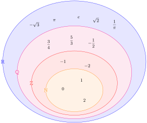

Trascina e ordina i seguenti numeri dal minore (più a sinistra) al maggiore (più a destra).
Paragrafo 1.2 Insiemi, operazioni tra insiemi, insiemi numerici
Gli insiemi e i sottoinsiemi sono alla base della maggior parte delle scritture matematiche. Tra i più usati possiamo ricordare gli insiemi numerici, l’insieme delle soluzioni di un’equazione o una disequazione, l’insieme di definizione di una funzione, eccetera. Gli insiemi in generale non contengono solo numeri: potrebbero contenere oggetti astratti, parole, lettere e perfino altri insiemi.
Sottoparagrafo 1.2.1 Insiemi e operazioni
La definizione di insieme non esiste, perché è un ente primitivo della matematica e non ci serve una definizione per capire cos’è in quanto è intuitivo. Definiamo quindi solo la notazione: un insieme composto si indica solitamente con una lettera maiuscola e i suoi elementi, se indicati singolarmente, vanno indicati dopo l’uguale, tra parentesi graffe separati da virgole
\begin{equation*}
A = \{a_1, a_2, a_3, \dots\}
\end{equation*}
Per esempio: l’insieme \(L\) delle lettere che compongono la parola “matematica” è \(L=\{a, c, e, i, m, t\}\text{;}\) l’insieme delle soluzioni (radici) dell’equazione di secondo grado \(x^2-1=0\) è \(S=\{-1,1\}\) o anche \(S=\{\pm 1\}\text{.}\)
Per indicare che un elemento appartiene a un insieme (cioè che l’elemento è uno degli elementi dell’insieme) useremo il simbolo \(\in\text{.}\) Negli esempi precedenti \(a \in L\) (tra gli altri) e \(-1 \in S\text{.}\) Se un elemento non appartiene a un insieme usiamo il simbolo \(\not\in\text{.}\) Per esempio la lettera b non fa parte della parola “matematica”, quindi \(b\not\in L\text{.}\)
Se un insieme non contiene elementi si chiama insieme vuoto e si indica con il simbolo \(\emptyset\text{.}\) Per esempio: l’equazione \(x^2+1=0\) non ammette soluzioni reali e quindi diremo che l’insieme delle soluzioni è vuoto \(S=\emptyset\text{.}\) Attenzione! \(S=\{\emptyset\}\) non è la stessa cosa: in questo caso \(\{\emptyset\}\) indica l’insieme che contiene l’insieme vuoto, quindi \(S\) non è vuoto, ma contiene un elemento!
Se un insieme \(A\) ha tutti gli elementi contenuti in un altro insieme \(B\text{,}\) allora si dice che \(A\) è un sottoinsieme di \(B\) e si indica come \(A\subseteq B\). Per esempio l’insieme \(L_1=\{a, e, m, o, r\}\) delle lettere che costituiscono la parola “amore” è un sottoinsieme di \(L_2=\{a, e, m, o, r, t\}\) delle lettere che costituiscono la parola “teorema”, quindi \(L_1\subseteq L_2\text{.}\)
Tra insiemi si posso fare delle operazioni binarie (cioè fra due insiemi \(A\) e \(B\)) che danno come risultato un altro insieme e in particolare utilizzeremo:
-
l’unione \(A \cup B\defeq \{x\in A \vee x\in B\}\text{,}\) cioè l’insieme gli elementi comuni e non comuni dei due insiemi;
-
l’intersezione \(A \cap B \defeq \{x\in A \wedge x\in B\}\text{,}\) cioè l’insieme dei soli elementi comuni dei due insiemi
Per esempio consideriamo le parole “matematica” e “divertente” e gli insiemi \(L_1=\{a, c, e, i, m, t\}\) e \(L_2=\{d, e, i, n, r, t, v\}\) delle lettere che compongono le due parole. Le parole “matematica divertente” hanno come insieme delle lettere l’unione dei due insiemi \(L_1 \cup L_2 = \{a, c, d, e, i, m, n, r, t, v\}\) (da notare che non abbiamo contato due volte gli elementi comuni). L’insieme delle lettere che accomunano le due parole è invece l’intersezione dei due insiemi di partenza \(L_1 \cap L_2 = \{e, i, t\}\) (quindi c’è qualcosa di divertente nella matematica e viceversa!). Se avessimo scelto altre parole l’intersezione avrebbe potuto dare come risultato l’insieme vuoto: “radici” e “bello” non hanno lettere in comune, infatti \(L_1 = \{a, c, d, i, r\}\) e \(L_2 = \{b, e, l, o\}\) hanno \(L_1 \cap L_2 = \emptyset\) (non c’è niente di bello nelle radici e viceversa!). Per questi esempi unione e intersezione vanno fatte confrontando gli insiemi manualmente; vedremo che per gli insiemi numerici queste operazioni sono molto più veloci.
Esiste anche un’altra operazione che useremo spesso, la sottrazione insiemistica che come suggerisce il nome sottrae elementi da un insieme all’altro e si indica \(A - B\defeq \{x\in A \wedge x\not\in B\}\text{.}\) Questa operazione è particolarmente comoda quando si vogliono escludere solo uno o alcuni elementi da un insieme più grande. Per esempio se \(L\) è l’insieme delle lettere dell’alfabeto inglese, l’insieme delle lettere dell’alfabeto italiano è \(L-\{j,k,x,y\}\text{.}\)
Sottoparagrafo 1.2.2 Insiemi numerici
Gli insiemi che contengono solo numeri sono chiamati insiemi numerici. Dal punto di vista formale, attraverso gli assiomi di Peano si può definire l’insieme dei numeri naturali \(\N\). I numeri naturali sono quelli che abbiamo imparato a usare fin da piccoli, cioè \(\N=\{0, 1, 2, \dots\}\text{.}\)
Ammettendo l’esistenza del concetto di opposto di un numero per definire la sottrazione si estende il concetto di numero naturale a quello di numero negativo e si costruisce l’insieme dei numeri interi relativi \(\Z\text{.}\) Questo insieme contiene lo zero e i numeri interi positivi (cioè tutti i numeri naturali) ma anche i numeri interi negativi, per cui \(\Z=\{\dots, -2, -1, 0, 1, 2, \dots\}\) e quindi \(\N\subseteq\Z\text{.}\)
Introducendo il concetto di reciproco di un numero per definire la divisione si estende il concetto di numero intero relativo a quello di numero razionale (le frazioni) e si costruisce l’insieme dei numeri razionali \(\Q\text{.}\) Questo insieme contiene tutte le possibili combinazioni di numeri divisi tra loro, quindi contiene tutti i numeri interi relativi (dati dalla divisione di qualsiasi numero per 1) ma anche i numeri decimali (sia finiti che periodici), per cui \(\Z\subseteq\Q\text{.}\)
Se si introducono altre operazioni (come per esempio la radice, il logaritmo, le funzioni goniometriche), i numeri razionali non bastano più e bisogna ricorrere ai numeri irrazionali (come per esempio \(\sqrt{2}\) e \(\pi\)). L’unione tra l’insieme dei numeri razionali e l’insieme dei numeri irrazionali costituisce l’insieme dei numeri reali \(\R\text{.}\) Questo insieme contiene per costruzione tutti i numeri razionali, per cui \(\Q\subseteq\R\text{.}\)
Alcune operazioni non sono possibili nei numeri reali (per esempio cercare la radice quadrata di -1). Queste operazioni richiedono quelli che sono i numeri immaginari, che insieme ai numeri reali formano l’insieme dei numeri complessi \(\C\text{.}\) Questo insieme contiene per costruzione tutti i numeri reali, per cui \(\R\subseteq\C\text{.}\) Con i numeri complessi si può praticamente fare tutto, quindi non ci servirà (in questo libro) un insieme numerico più grande dei numeri complessi.
Dalle relazioni tra gli insiemi elencate prima è possibile creare il diagramma in figura che mostra come l’insieme dei numeri reali contenga tutti gli altri.

Una proprietà importante di tutti gli insiemi numerici (eccetto quello dei numeri complessi) è che i numeri possono essere ordinati. Esiste quindi una relazione d’ordine che permette di ordinare i numeri dal più piccolo al più grande e anche di rappresentare i numeri su una linea orientata. Questo permette di scrivere delle relazioni tra numeri come \(\frac{3}{9}=\frac{1}{3}\text{,}\) \(-1\lt 0\) oppure \(\pi\gt 3\) con i simboli di uguaglianza (\(=\)) e disuguaglianza stretta (strettamente minore \(\lt\) e strettamente maggiore \(\gt\)). Esistono anche i simboli di disuguaglianza minore o uguale \(\le\) e di maggiore o uguale \(\ge\) che permettono di confrontare numeri, ammettendo che possano anche essere uguali tra loro. Esiste anche il simbolo di disuguaglianza diverso \(\ne\) per indicare che due numeri non sono uguali.
Esercizio 1.2.1. Ordinamento numeri.
Per comodità definiamo anche altri particolari insiemi numerici che troveremo in futuro:
-
l’insieme dei numeri reali strettamente positivi \(\R^+\text{,}\) che contiene tutti i numeri reali positivi (non lo zero), cioè \(\R^+ \defeq \{x\in\R: x\gt 0\}\)
-
l’insieme dei numeri reali positivi o nulli \(\R^+_0\text{,}\) che contiene tutti i numeri reali positivi e lo zero, cioè \(\R^+_0 \defeq \{x\in\R: x\ge 0\}=\R^+ \cup \{0\}\)
-
l’insieme esteso dei numeri reali \(\R^*\text{,}\) definito dall’unione dei numeri reali con i due concetti di \(+\infty\) e \(-\infty\text{,}\) cioè \(\R^* \defeq \R \cup \{-\infty,+\infty\}\)